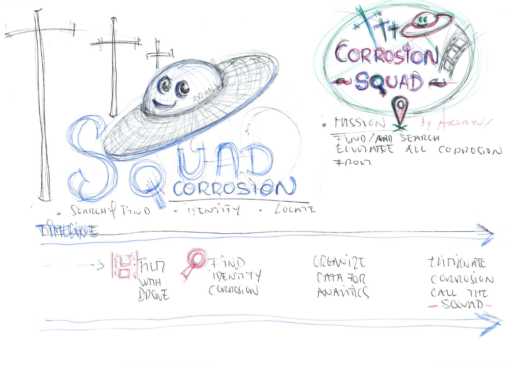
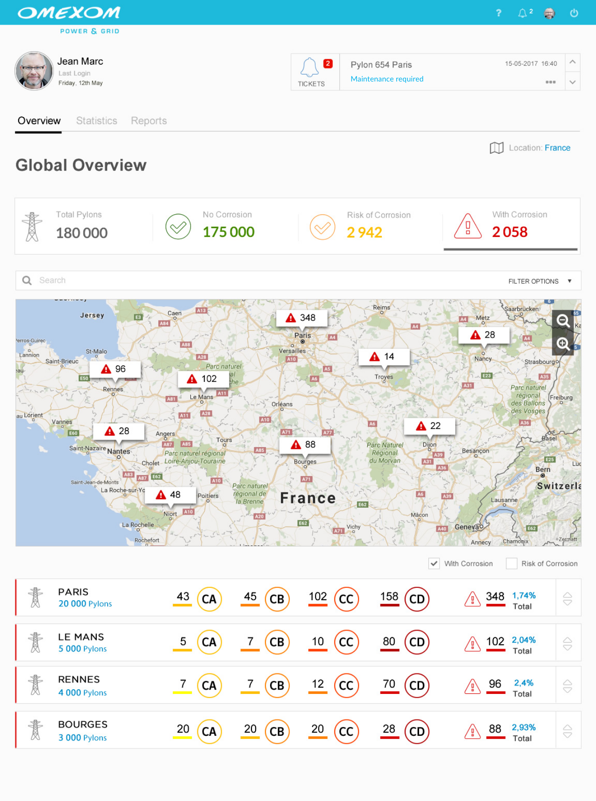
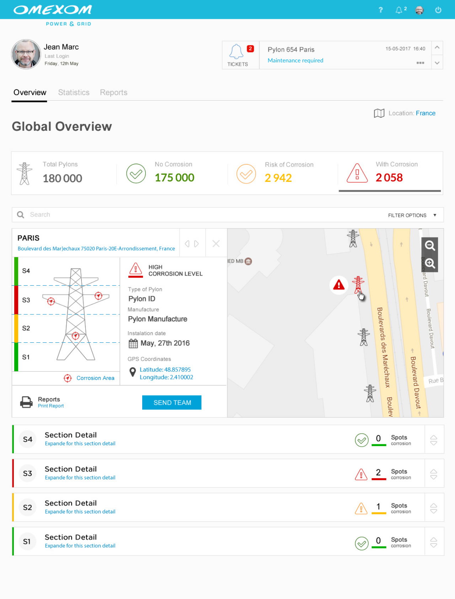
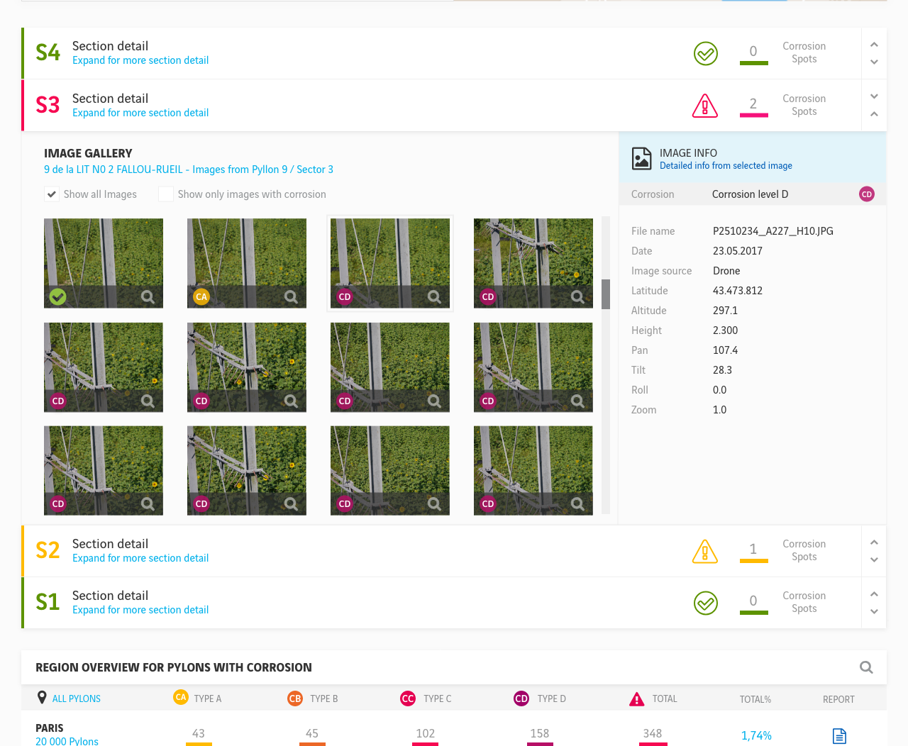
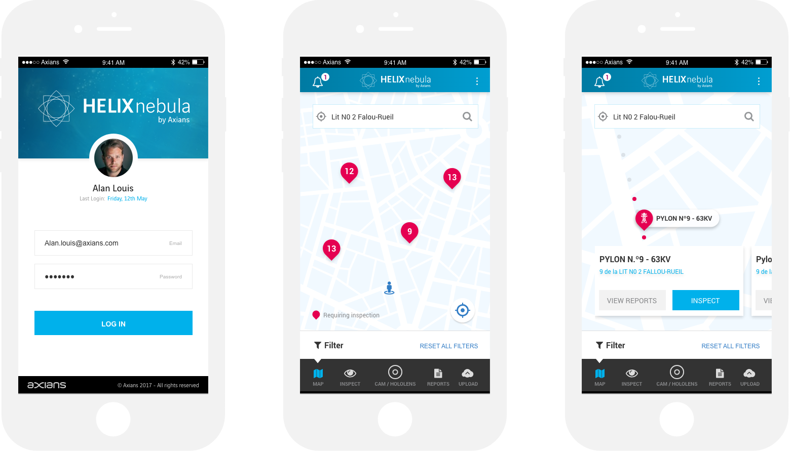

Automatic Image Analysis SolutionData analytics platform, image processing with Machine Learning algorithms to automate corrosion classification from photographs
This project started on the first Vinci Energies Hackathon, Hack La Factory: 48 hours to make data and IoT solutions come to life.
We participated and we were one of the winning teams.
Over a period of 48 hours, nearly 200 people took part in one of the seven challenges put forward by VINCI Energies in Paris.
Our challenge was - Image processing: How to optimize the maintenance of electrical pylons?
As the designer in the team, I focused on creating a prototype of a final product.
From the Hackathon to the development of the product.
With the victory in this challenge, Axians decided to invest in the development of this project, and so, Helix Nebula was born.
The purpose was to design, a data analytics platform that could automate the process of identification & classification of corrosion on the electrical pylons based on ground and aerial photographs. It should also include algorithms to predict the evolution of corrosion of each asset, based on the correlation of data obtained by various external sources (like weather conditions).
I led the Product Design - User Experience (UX) and User Interface (UI) of this project.
Mains task
1. Research Insights & Ideation 3. Planning and scope definition 4. User Interface & Experience 5. Motion & Interactions 6. Wireframing 7. Prototypes 8. Mockups
Tools
Adobe XD | Invision | Adobe Premiere| After Effects | Illustrator | Photoshop |
Based on the prototype I made this video to promote the solution and show the interaction.
I have several versions, this one was presented in the Vinci Energies Internacional Seminar Paris 2018
by the time CEO of Vinci Energies Yves Meignie .
Helix Nebula video mockup apresented in Vinci Energies Internacional Seminar Paris 2018
In a hackathon of 48h time is one of the biggest issues. While my teammates were focused on achieving the best results in terms of image analysis and their respective detection of corrosion. I was working on a prototype that could complement our pitch showing a complete solution for end-users.
But besides this concern, I knew from my publicity background the importance of getting noticed among the other teams. So the strategy was to start with a cool name for the team that could be catchy and memorable. Since one of the biggest image sources was the drones, I started playing around with this theme and came out with the idea of a Squad of Drones with the mission of finding corrosion. After the first sketches, the final name for the team occurred "Corrosion Squad". The strategy resulted, we had a funny way to pronounce it. After the presentation of the team, everyone in the hackathon knew who we were.

Omexom, is the VINCI Energies brand dedicated to energy transition, is positioned across the entire value chain, from generation to transmission, distribution grids and the final consumer’s meter. They were the ones that launched the challenge about Image processing: How to optimize the maintenance of electrical pylons?
Being responsible for the maintenance of thousands of electric pylons requires a huge effort in terms of maintenance operations. To optimize this process, Omexon started to use drones to take photos of the pylons. This solution decreased the costs in terms of the operations on the field but originated another problem, thousands of photos to be analyzed.
I started my research focused on these group, I wanted to understand who would be the main target, what are their motivations, their problems, and expectations. I wanted to walk in their shoes.
Based on these I had some interviews with the Omexom engineers to start defining the Personas


With the victory on the Hackathon, we had the chance to develop this project since we gathered the necessary support from our stakeholders to invest in this solution. It was time to find a final name to replace "Corrosion Squad" the chosen name was "Helix Nebula".
To provide the best experience according to our user needs, this platform should quickly provide all the information they need in a fast and intuitive way. The main area "Overview", it's a dashboard that gathers all the info required by the expectations of our personas. Here we can view the big picture.
This is the dashboard with a general view of all pylons organized by region. Doing a drill down in the cluster we can reach to a specific pylon detail.
The pylon graphical representation is divided in four sections to quickly inform in each area is the corrosion detected.
Here we also have info of all the pylons universe, how many are ok, with corrosion and in risk of corrosion.
By clicking in a section detail we have access to all images from that area. When detected, corrosion can be categorized in 4 levels.
. CA (corrosion type A lower level)
. CB (corrosion type B)
. CC (corrosion type C)
. CD (corrosion type A highest level)

All the data collected is analyzed and in this area pertinent information to decision support becomes available.
. Processed images average
. Corrosion average levels by pylon
. Corrosion average by manufacturer
. Corrosion based on cardinal position
. Relation with weather
. Corrosion overview by region
Here all information concerned with the image processing is available. All the jobs processed versus total of images.
For each group of images uploaded a job is created and here we can follow and manage all the processes going on. This is when all images will be checked in order to automatically detect any spot of corrosion.
This is a small video I made to explain the automatic detection of the corrosion. The process is divided into 4 major steps:

Among other features, this app will provide a step by step checklist that will guaranty all the procedures will be done as the best practices require.

Concept using mixed reality